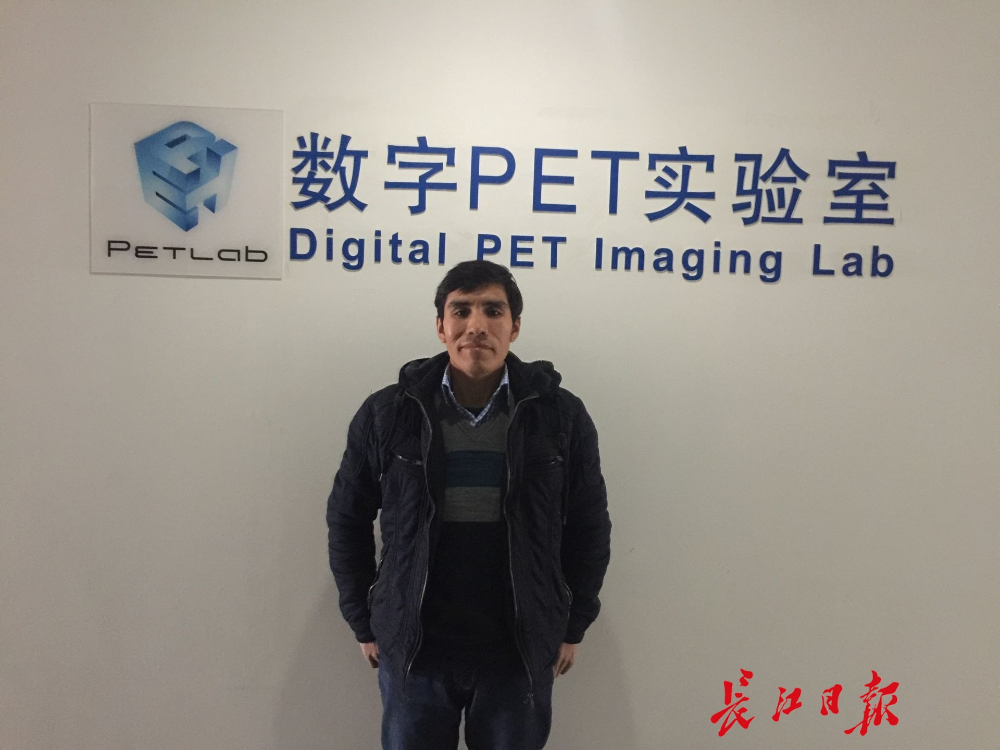

Instead of going home for the Spring Festival, Peruvian Xueba had a rich New Year's meal in Han
Changjiang Daily Media Network News (Reporter Li Jia, Communicator Yang Ya) On February 16th, after having lunch in the cafeteria, Hugo Pumacahua Chahuayo, a foreign student from Huazhong University of Science and Technology's Digital PET Laboratory, returned to his lab.
Hugo Pumacahua Chahuayo comes from Peru, a distant country in South America. He is an indigenous Indian and is 43 years old this year. Before coming to Wuhan, he was an engineer in Peru responsible for repairing large medical equipment in hospitals. Eight years ago, Hugo applied for a scholarship and came to Huazhong University of Science and Technology to study Biomedical Engineering at the graduate level. In 2015, he entered the Digital PET Laboratory at Huazhong University of Science and Technology to pursue his doctoral degree under Professor Xie Qingguo.
PET is one of the most advanced medical imaging technologies in today's world after X-ray machines, CT, and MRI. It has irreplaceable advantages in the early diagnosis and efficacy evaluation of tumors, neurological diseases, and cardiovascular system diseases. In 2010, Professor Xie Qingguo developed the world's first fully digital PET, breaking through the bottleneck that traditional PET instruments were constrained by analog circuits; in 2015, he successfully developed the world's first clinical full-digital PET, capable of detecting tumors and other major diseases earlier.
Hugo says that large medical equipment like PET involves more than ten disciplines such as electronics, mechanics, optics, etc. It is both challenging and very interesting. The longer one spends in this field of research, the more deeply they become fascinated by it. Previously, he was only involved in engineering repair work. In the Digital PET Laboratory, his research has given him the opportunity to design, invent, and create PET instruments, which aligns with his dreams and aspirations. Although most students have gone home, he will continue to stay in the laboratory during this long holiday to focus on completing an important task assigned by Professor Xie - researching methods for obtaining energy information from scintillation pulses, a core technology of digital PET.
Currently, Hugo's team has successfully installed, debugged, and optimized the first clinical full-digital PET, producing the world's first digital PET human image that clearly displays brain sulci layers, spinal cord resolution, femur cortical bone conditions, etc. Last month, the clinical full-digital PET passed the special approval for innovative medical devices by the National Medical Products Administration (NMPA), and is currently in the clinical trial stage. Once it passes CFDA certification and obtains a medical device registration certificate, it can enter the market.
Hugo says that his Digital PET Laboratory possesses globally leading technology. It's like a huge magnet attracting overseas talents; to date, several experts from Italy, Russia, Germany, Peru, and Arab countries have joined the team. The Russian professor Valery and Italian professor Nicola in the team are top talents in their respective fields.
Looking at the empty campus, Hugo says he sometimes misses home. His family in the central mountainous highlands of Peru is not well-off; during his studies in Wuhan, scholarships allow him to return home twice a year. However, in China, he has made many friends and visited one of them's house in Wuhan just days ago for a sumptuous New Year’s Eve dinner with Chinese classmates, celebrating the Spring Festival early.